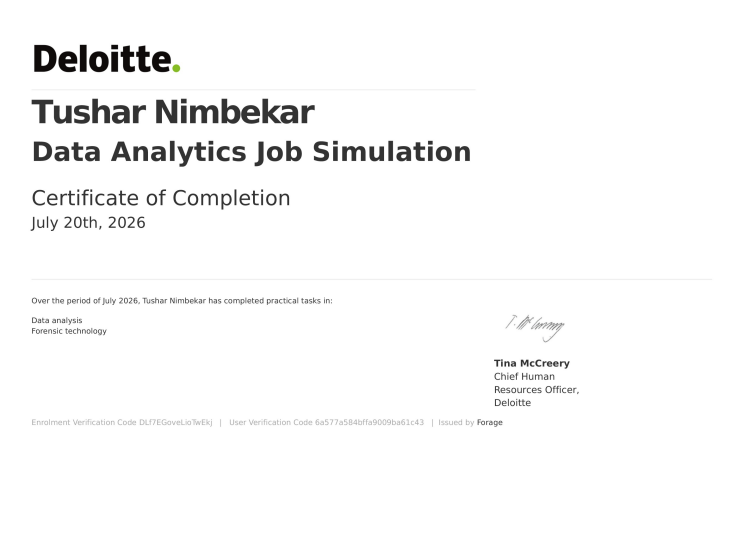
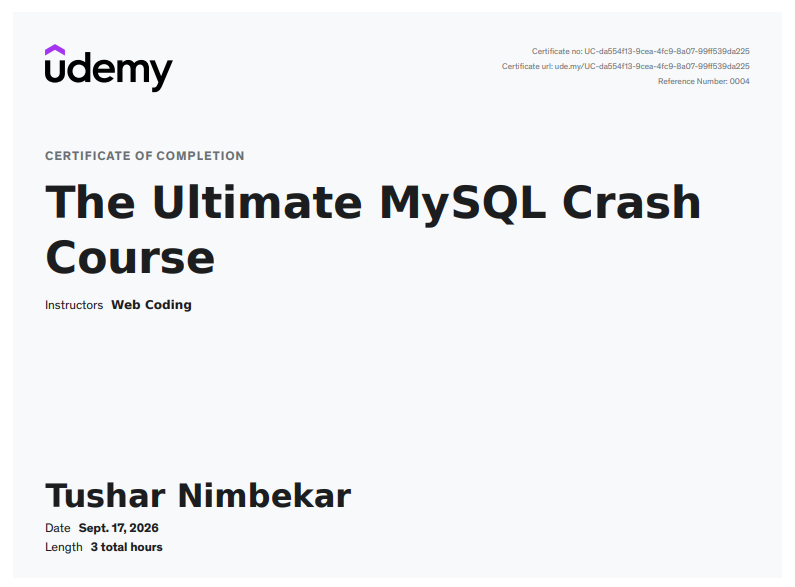

Experience and Education
[Aug 2026] - [Sept 2026]
Data Analyst · Apex Planet Software Pvt. Ltd.
- Developing and maintaining data pipelines to extract, transform, and load data from various sources into a centralized data warehouse.
- Creating interactive dashboards and reports using Power BI to visualize key performance indicators (KPIs) and business metrics.
- Collaborating with cross-functional teams to understand business requirements and provide data-driven insights for decision-making.
[2024] - [2026]
[ MCA ] · [ JSPM University Pune ]
- Applied data analytics concepts through hands-on coursework projects, including dashboard design and data modeling
- Built skills in data visualization, statistical analysis, and data-driven decision-making using real datasets
- Completed the Business Intelligence & Analytics program on NPTEL, covering BI tools and reporting workflows
- Earned a Professional Certificate in Python Programming from the Python Institute
[2021] - [2024]
[ BCA ] · [ SPPU University Pune ]
- Built strong SQL fundamentals, from basic queries to advanced joins and aggregations
- Developed proficiency in Python and SQL through coursework and independent practice projects
- Built a solid grounding in programming fundamentals — logic building, functions, and data handling — through BCA coursework
- Developed a strong base in computer science fundamentals, preparing for more advanced data analytics work in the MCA program
Certifications

Python Professional Certificate

Deloitte Data Analytics Job Simulation Certificate

MySQL Crash Course Certificate
Get In Touch
Have an interesting project or an open role? Let's connect!